Opening: the thesis title.
Thesis defense · Barili, Cebu
E-sugid
Design and Development of a Centralized Community Communication and Information Dissemination System
sugid (Cebuano) — to tell, to report.
Researchers · Adviser · Program & institution · Defense date — to be added
→ next ← back G chapters N notes ? all shortcuts
A Flutter Android app for residentsA role-based web dashboard for staffOne shared record
Open (≈30 s). Greet the panel and introduce the team. Read the full title once.
"E-sugid comes from sugid — to tell or report. The system is a shared place where Barili's offices tell residents what they need to know, and residents tell the offices what needs attention."
The island behind the title is drawn from the same barangay boundary file the app uses — 42 barangays.
Why this system
Context
Barili is 42 barangays — and many conversations.
Official notices, safety information and residents' concerns move among residents, barangay offices, municipal departments and local organizations.
Each tile on the map is one barangay, drawn from its PSA 2020 boundary.
- Residents
- 42 barangay offices
- Municipal departments
- Local organizations
The design problem Draft · for academic review
When updates and follow-ups travel through separate channels…
- residents may have difficulty finding relevant updates and tracking their concerns;
- officials may have difficulty keeping a consistent record of communication.
Support with your actual requirements evidence — interviews, survey or approved manuscript.
The response
…E-sugid brings them into one shared system.
A resident Android app and a role-based web dashboard share one backend — so announcements, concerns and their updates live in one consistent record.
The drifting map is a visual metaphor, not research evidence.
Problem (≈1 min). Establish the setting: one municipality, 42 barangays, several kinds of offices.
State the problem from your approved manuscript. The wording on screen is the team's draft — replace it with the final statement and cite your requirements evidence (interviews / survey / observation).
Beat 3: the tiles join — "one shared system".
What the study set out to do
General objective Draft wording
To design and develop E-sugid, a centralized community communication and information dissemination system — a Flutter-based Android application and a role-based web administration dashboard — to support official information access, targeted announcements, resident feedback, and coordinated communication among residents and authorized stakeholders in Barili.
Resident appFlutter · AndroidResidents
one shared record
Shared backendFirebaseAuth · Firestore · Storage · Functions · Messaging
scoped by role
Staff dashboardWebBarangay officials · Municipal departments · Organizations · LGU IT
Specific objectives Draft · align with manuscript
Seven objectives, each answered by a chapter.
Select an objective to jump to where it is demonstrated. Objectives 1 and 7 depend on the team's actual requirements and evaluation evidence.
- Define the requirements for information access, official publishing, resident feedback and staff communication.Evidence pending
- Design the architecture and interfaces — Android app, staff dashboard, shared backend.Ch. 11
- Develop centralized dissemination — announcements and safety notices for intended audiences, with calendar and saved reading.Ch. 5–6
- Implement two-way communication — concerns to the right office with status updates; complaints kept separate.Ch. 4
- Implement verification and role-based administration with scoped access.Ch. 3 · 10
- Provide supporting information and guidance — services hub, local tools, assistant navigation.Ch. 7–9
- Evaluate the system for functionality, usability, audience communication and role access.Results pending
Objectives (≈50 s). Read the general objective in your own words — don't read the whole slide.
Name the two clients and the shared backend. Then walk the seven objectives quickly; say which chapter answers each.
Be upfront: objective 1 (requirements) and 7 (evaluation) rest on evidence that must come from your manuscript.
A resident enters
Resident app · Home
Official updates come first.
- View My Barangay — the resident's own barangay page.
- Notices, Advisories, Events — filter the feed by type.
- Verified publishers — each post shows who issued it.
- Assistant — always one tap away.
 1234
1234
Resident app · Services
Every community service in one hub.
- Emergency Center & Safety Alerts
- Bayanihan Works and Local Market
- Municipal Officials
- Town Map · Town Calendar · Barili Weather · Explore Barili
The centre + Concern button is on every main tab.
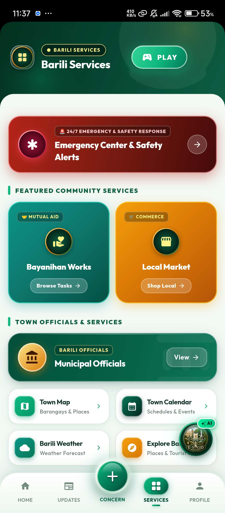
1234Staff dashboard · Resident Verification
Residents are verified before they take part.
Residents submit verification in the app; authorized barangay staff review it in the dashboard.
This capture shows an empty Pending queue. Proof-document review and approval are not shown.
Sign-in, registration with e-mail OTP and password recovery are in the app. The captured login screen is omitted because it shows a personal e-mail address.
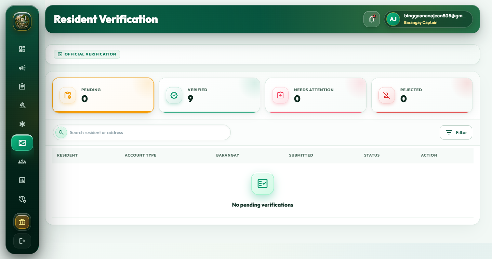
Resident enters (≈45 s). Home: point to the four numbered areas. Emphasize "official, verified publishers".
Services: everything else lives here — we'll visit them in order.
Verification: residents are verified by their barangay. Our capture has an empty queue — say so plainly.
A concern becomes a case
Resident app · Concern Center
Two doors: public concerns, private complaints.
“Report public problems like roads, water, or trash. Report private problems with a neighbor or person.”— Concern Center
- Start Filing Concern — this chapter's journey.
- File a Complaint — a separate, confidential workflow (step 6).
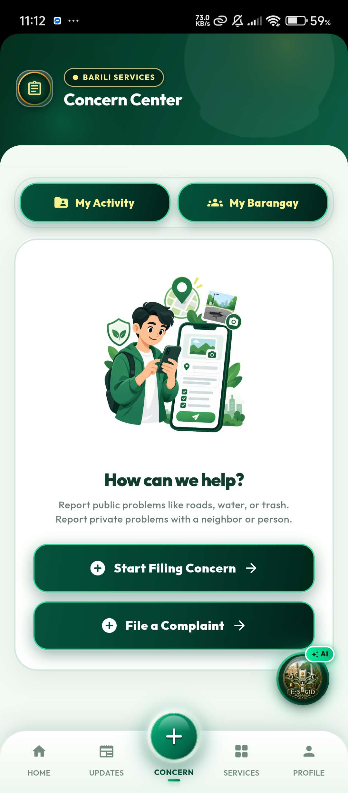
12Step 1 of the concern form
The resident chooses who should handle it.
Goes to the barangay office — in our example, Barangay Vito.
Goes to the responsible municipal department of the LGU.
Goes to an approved organization that handles that kind of concern.
Next steps add details, photos and location; the form can be saved as a draft. Lines on the map illustrate the choice — they are not live data.
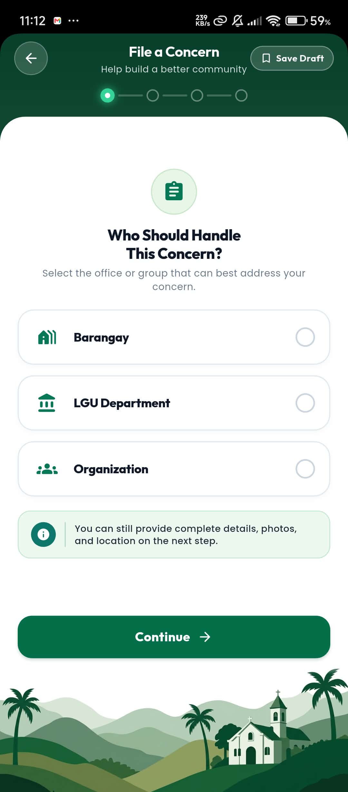
Resident app · My Activity & Barangay Board
The resident can follow it.
- My Concerns lists the resident's cases as Active or Resolved, with status badges such as In Progress.
- Unfinished drafts stay on the device until submitted.
- The Barangay Board shows public reports in the barangay — so neighbors can see an issue is already reported.
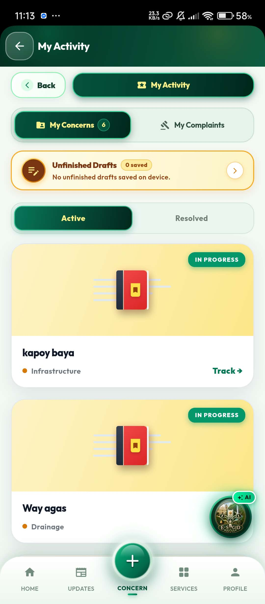
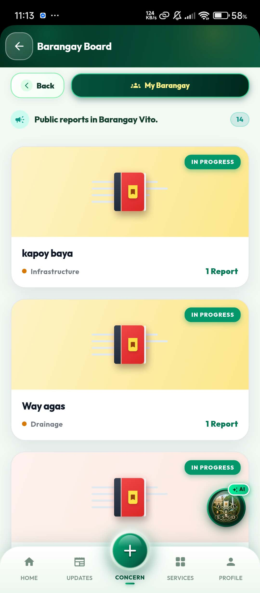
Staff dashboard · Concerns
The receiving office sees it in its queue.
- Status tabs — Active · In Progress · Awaiting Information · Resolved.
- By category, with share of reports and a View action.
- Filter and Download for records.
Barangay staff see concerns sent to their own barangay. Counts are records from testing, not evaluation results.
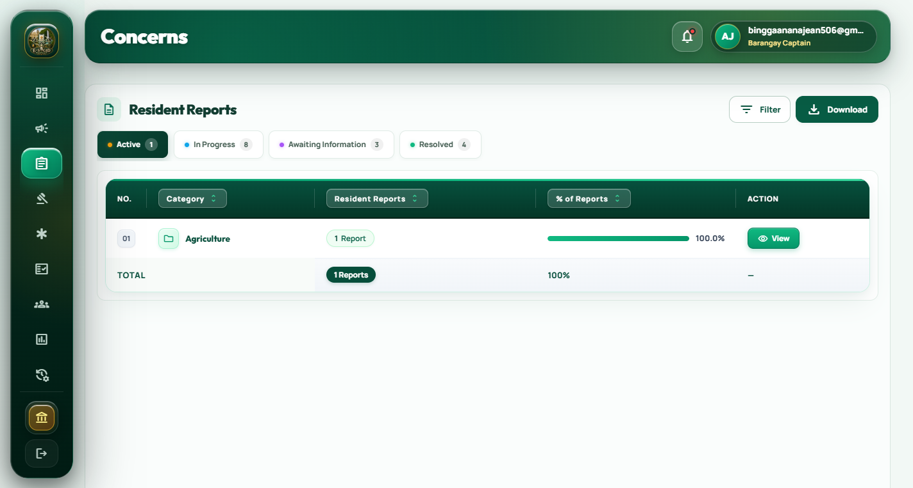
123Case lifecycle
Every change becomes part of the record.
Staff move the case forward. If they need more details, it waits for the resident; the resident's reply returns it to In Progress. Not every case passes through every stage.
Key actions appear in System Logs — for example Concern submitted and Concern resolved.
Still to capture: one matched case — submission → staff update → resident timeline → resolution.
Active
In Progress
Resolved
staff request details
Awaiting Information
resident replies
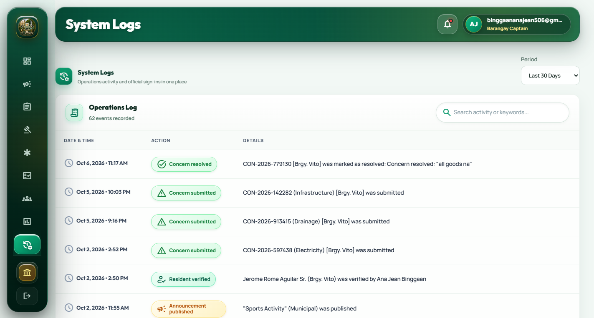
Resident app · File a Complaint
Private complaints stay separate.
“Only you and barangay officials can see this complaint. The other person will not see your report in the app.”— Complaint form
Staff handle complaints in their own queue, with stages such as To Review, Waiting for Reply, Hearings and Closed.
The staff complaint capture is withheld because it shows names in a dispute.
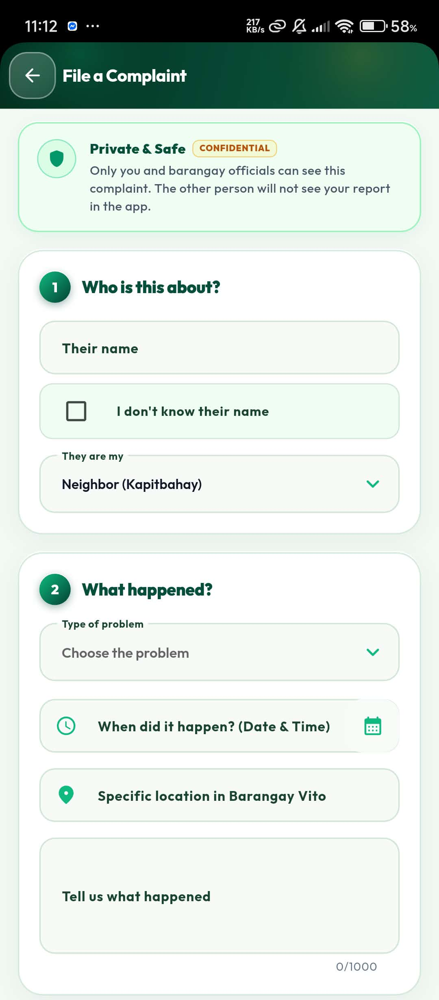
The core journey (≈2 min). This is the main contribution — slow down here.
1 · Two doors: public concern vs private complaint. 2 · Recipient choice — press → to cycle Barangay / LGU Department / Organization and watch the map route. 3 · The resident tracks it; neighbors see public reports on the Barangay Board.
4 · Staff queue by status and category. 5 · Status model: Awaiting Information is a branch, not a mandatory stage. Logs show the events. 6 · Complaints are confidential and separate.
Say clearly that a single matched end-to-end case capture is still pending (if not yet captured).
Information reaches the right people
Staff dashboard · Announcements
Every announcement has an intended audience.
Two published rows from the capture — select one to see its reach:
Staff publish notices, advisories and events now or on a schedule, for the audience their role allows.
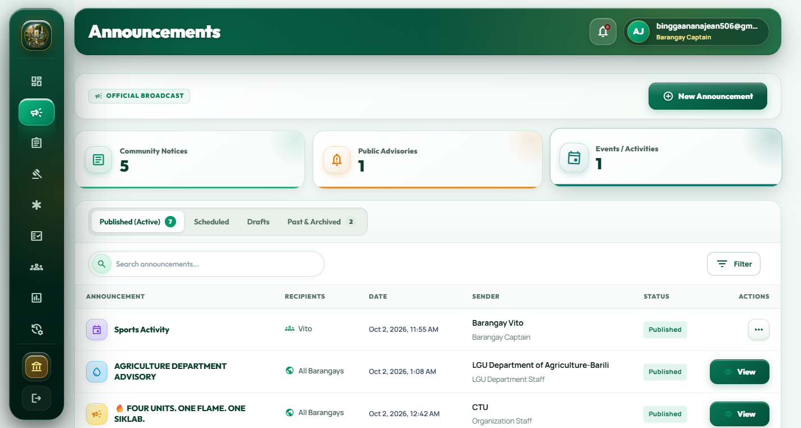
Resident app · Updates & My Barangay
Residents find it where they look.
The same Sports Activity post appears in the community Updates feed and in Barangay Vito's verified feed. Residents can search, filter by type and bookmark.
These stills show the feeds; they do not by themselves establish notification delivery.
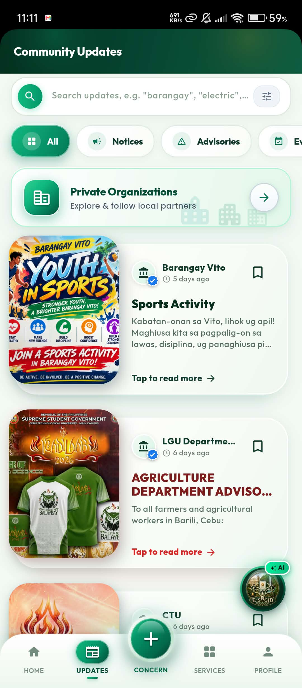
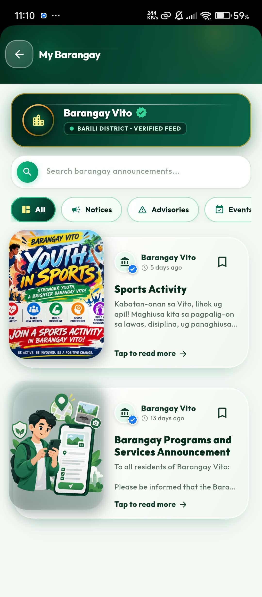
Resident app · Community Calendar
Events become dates.
The calendar shows scheduled community activities and what's coming up. In the source, event announcements are synced to the calendar by a Cloud Function.
Also in the source, not captured here: saving announcements to read later, including offline reading of saved items.
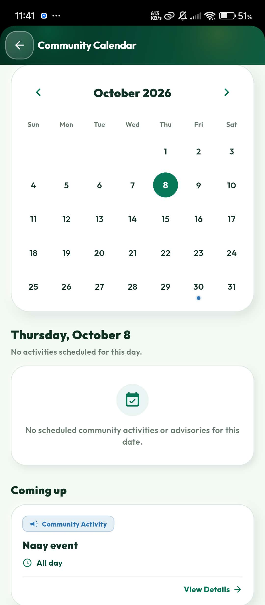
Targeted dissemination (≈50 s). The audience is part of every announcement. Press → to switch between the two real rows: "Vito" lights one barangay; "All Barangays" reaches all 42.
Then show the resident side: the same Sports Activity post in Updates and My Barangay. Calendar: events become dates.
Safety and coordination
Resident app · Emergency Center
Safety information has its own place.
The Emergency Center shows active alerts and safety advisories — here in its normal all-clear state — with direct access to emergency hotlines.
No incident is shown in this capture.
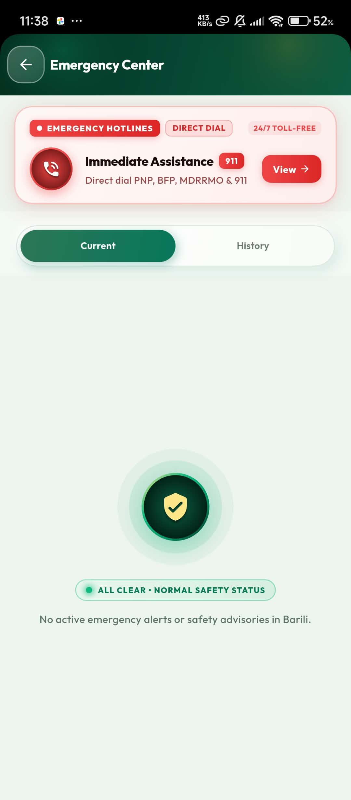
Staff dashboard · Send Emergency Alert
Staff compose an alert in three steps.
Storm, Flood, Fire, Medical, Security, Road hazard, Utility or Other.
Title, details, safety action, and optional evacuation center and hotline.
Start and end time, and the audience: Registered residents of Barangay Vito will receive this alert.
An emergency broadcast sends phone notifications with an alert sound.
Wizard captures only — final review, publication and delivery were not captured.
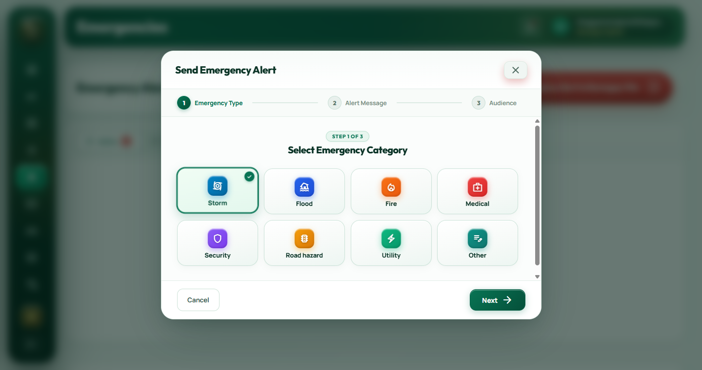
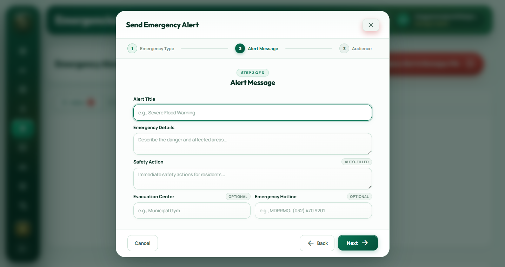
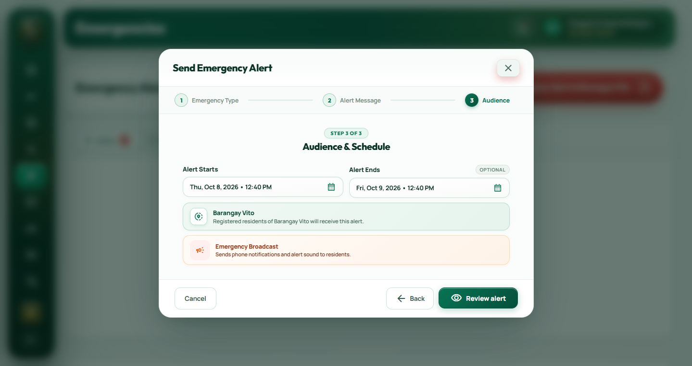
Resident app · Emergency Hotlines
Help is one tap away.
A hotline directory: the national 911 hotline and local agencies such as MDRRMO, BFP and PNP, each with call and detail actions.
A screenshot does not verify that each number is current. Also in the source, not captured: resident emergency reports and private organization-to-organization dispatch.
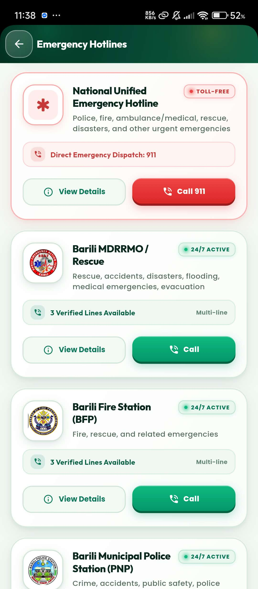
Safety (≈50 s). Start calm: the resident's Emergency Center in all-clear state.
Alert wizard: press → through steps 1–3. On step 3 the map pulses over Barangay Vito — the captured audience. Say that publication and delivery were not captured.
Hotlines: 911 + local agencies, one-tap call.
Neighbors and livelihoods
Resident app · Bayanihan Works
Neighbors ask for help — and offer it.
Help requests by category — Errands, Repairs, Farming and more — show how many helpers are needed and roughly how far away. Residents respond with I can help or post their own with Ask for Help.
Offers, acceptance, messaging and completion are in the source; this capture shows the request feed.
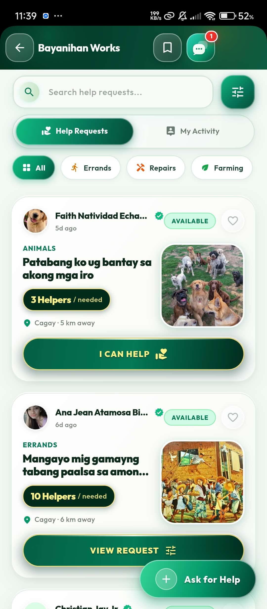
Resident app · Local Market
Local produce finds local buyers.
Listings show category, price per unit and availability. Buyers tap I'm interested; sellers use Sell an Item.
Coordination only — the app does not process payments.
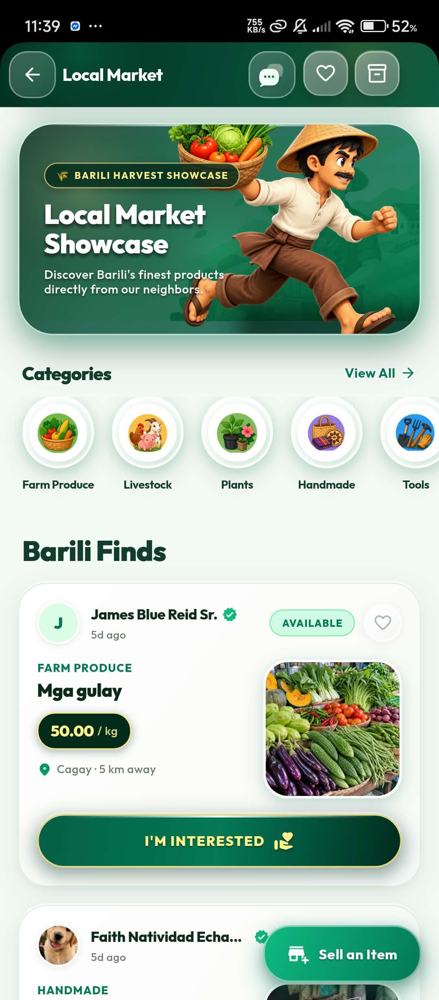
Community (≈1 min). These support the main argument: the same verified community also helps itself.
Bayanihan: request → offer → coordination. Market: listing → interest. No payments.
Explore the municipality
Resident app · Barangay Map
The app knows Barili's barangays.
The map works with Barili's barangay boundaries — the same PSA-derived file this website uses to draw its 3D Barili.
Hover or tap a barangay on the 3D map to see its name and area.
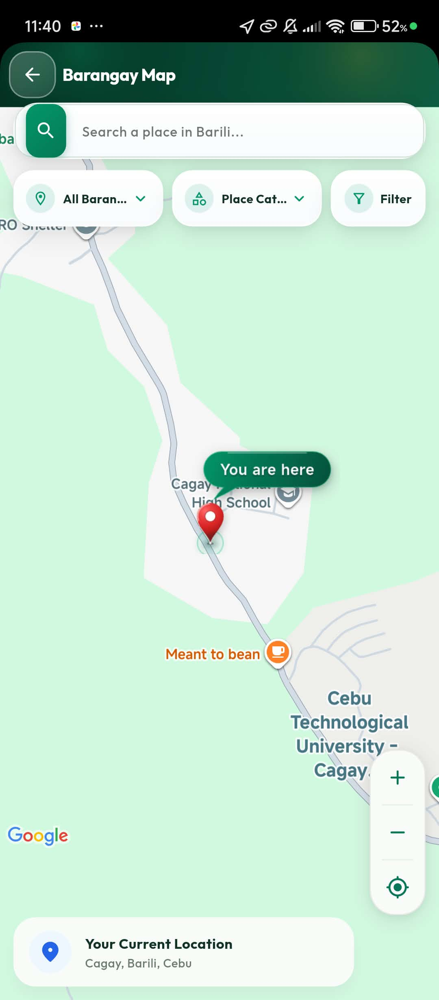
Resident app · Explore Barili
Places to visit — and how to get there.
Destinations such as Mantayupan Falls in Campangga, with navigation modes Car, Moto and Walk and the remaining distance and time.
A still does not prove route accuracy or live tracking. The line on the 3D map is illustrative.
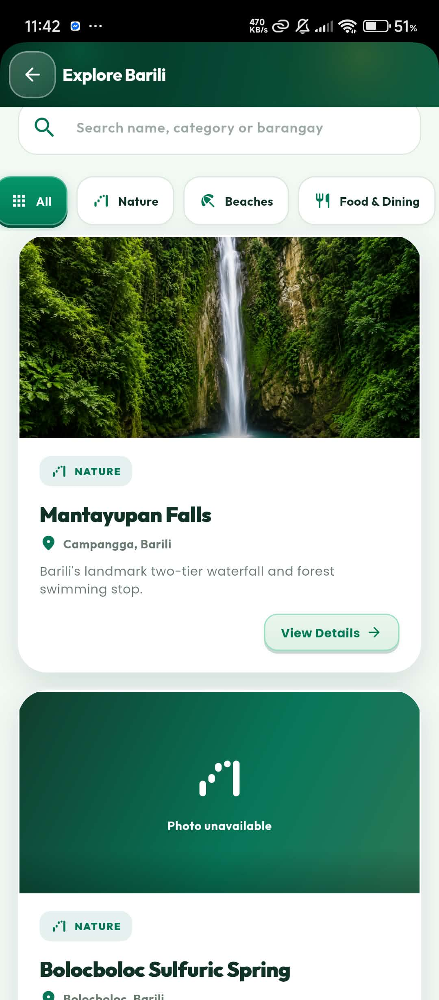
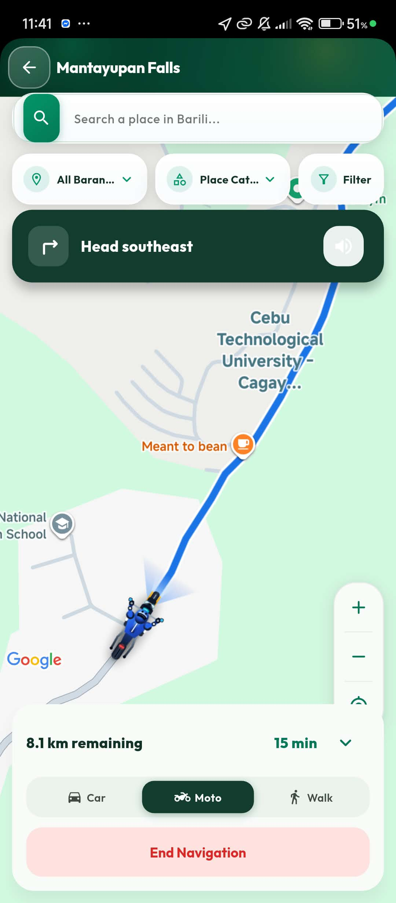
Resident app · Weather & Officials
Local context, close at hand.
Barili Weather shows current conditions and an hourly forecast (data source in the code: Open-Meteo). Municipal Officials lists the mayor, vice mayor and council members.
Captured weather is historical, and the app is not a weather-warning system. Confirm officeholders before discussing names.
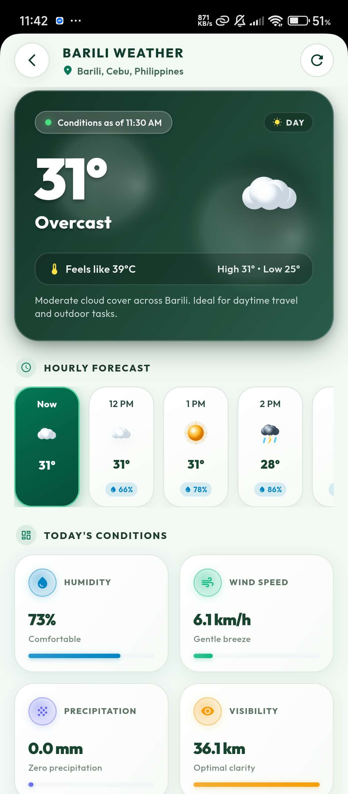
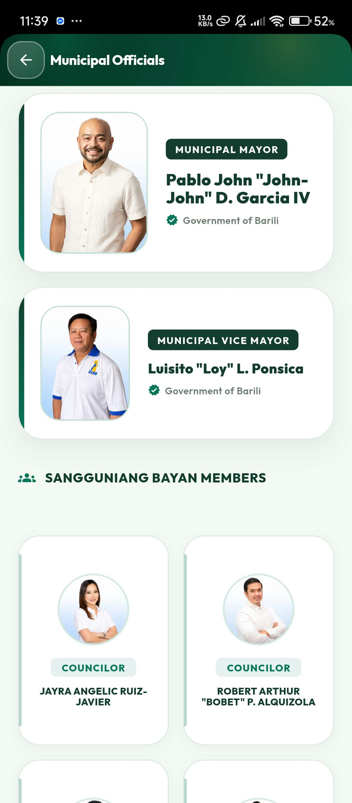
Explore (≈45 s). Invite the panel to notice the map they've been watching is the app's own boundary data. Hover a barangay.
Explore Barili → Mantayupan Falls → navigation modes. Weather and officials give local context.
Guidance through the assistant
E-SUGID Assistant · Replay
Ask, and the assistant shows the way.
Answers can carry a button that opens the right screen. Try it here — the buttons move this presentation the way the app moves the resident.
Answer text is the app's own (English). The first answer is quoted from the source; the other two match the captured screen.
E-SUGID AssistantIntelligent Municipal & Barangay Guide
local quick answer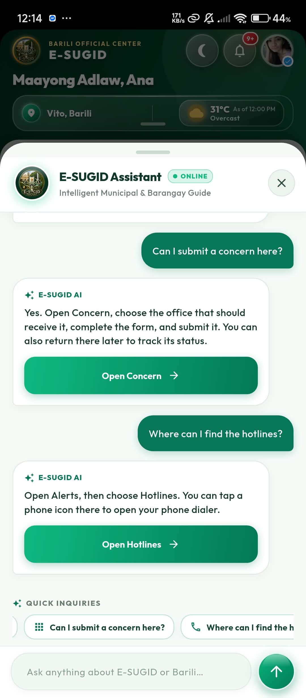
How it answers
Guidance — not decisions.
The three quick inquiries are answered on the phone, without a network call. Other questions go to a Cloud Function that calls Google's Gemini API with a server-side key, applies a rate limit, and only offers actions the user's role allows.
A verified cloud-generated answer has not been captured yet.
The assistant can
- Answer the quick inquiries locally
- Answer other questions through the cloud function
- Offer a button to an existing screen
- Reply in English or Bisaya for the quick inquiries
It does not
- Submit concerns for the resident
- Approve residents or staff
- Decide complaints
- Dispatch responders
Assistant (≈50 s). Press → to replay the three quick inquiries. Optionally click "Open Concern" to show navigation — then press G to come back.
Be precise: these three are local answers; other questions use Gemini through a Cloud Function. A cloud answer has not been captured — don't imply it was.
The staff side
Staff dashboard · Barangay Captain, Vito
One console, scoped to the user's role.
Dashboard — barangay activity (concerns received and resolved), top concern categories, pending verifications.
Concerns — resident reports by status and category.
Announcements — published, scheduled, drafts and archive, each with its recipients.
Emergencies — active and resolved alerts; send an alert to the barangay.
Resident Verification — pending, verified, needs attention, rejected.
Barangay Team — officials and requests for new official accounts, which LGU IT approves.
Use the sidebar or press → to tour. Complaints are omitted (personal details).
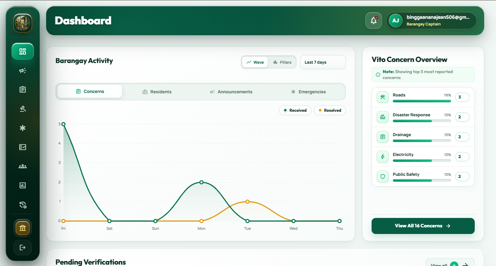
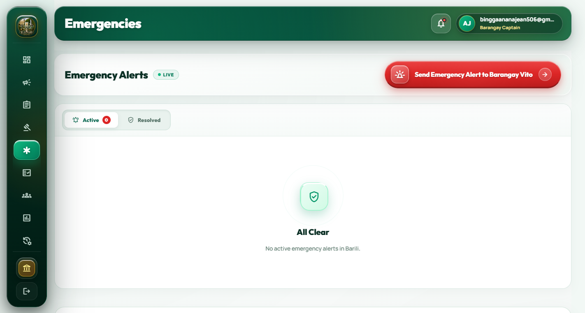
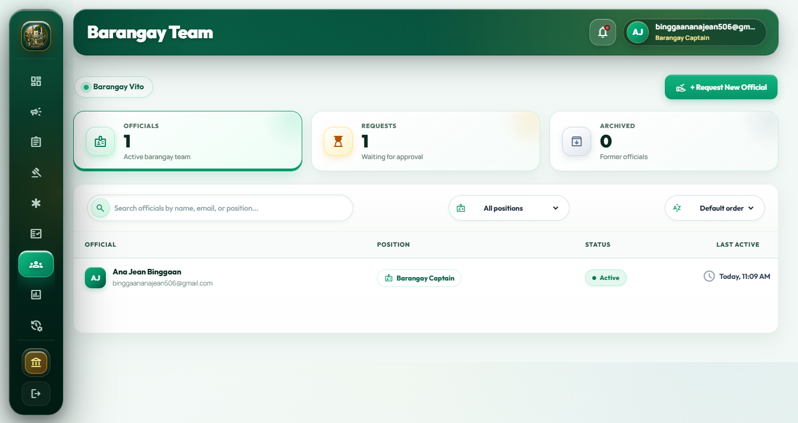
Roles and boundaries
Each role works within its boundary.
Role defaults from the project documentation. LGU IT can adjust capabilities, but department, organization and barangay boundaries remain. Captured screens show the Barangay Captain only.
- Concerns
- Sent to own barangay
- Emergency reports
- Own barangay
- Announcements
- Own barangay
- Resident verification
- Own barangay; may delegate
- Staff accounts
- Requests for own barangay (IT approves)
- Concerns
- No
- Emergency reports
- Own barangay
- Announcements
- As kagawad, own barangay
- Resident verification
- Only when delegated
- Staff accounts
- No
- Concerns
- Assigned department
- Emergency reports
- No
- Announcements
- Department identity; any audience
- Resident verification
- No
- Staff accounts
- Requests for same department (IT approves)
- Concerns
- Assigned organization
- Emergency reports
- Routed agency only
- Announcements
- Approved service area
- Private dispatch
- Send and receive
- Staff accounts
- Requests for same organization (IT approves)
- Concerns
- Those sent to LGU IT
- Emergency reports
- All
- Announcements
- Department identity; any audience
- Resident verification
- Municipality oversight
- Staff accounts
- Creates directly; approves requests
Interface visibility is only a usability layer — Firestore and Storage security rules enforce access independently.
Reports & logs
Operations stay on record.
An Operational Summary by period — concerns, verification, announcements and alerts — with export. System Logs record actions and official sign-ins.
These counts are application records, not thesis results.
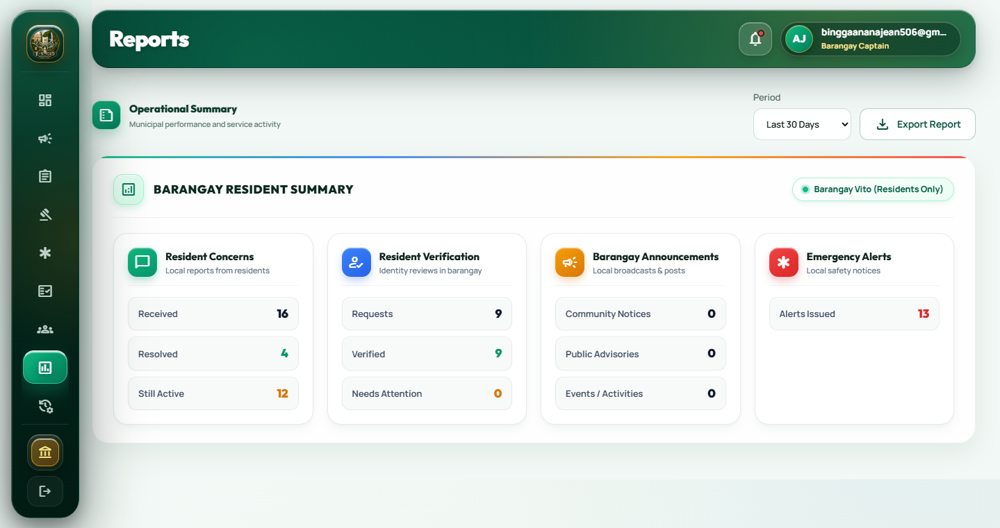
Staff side (≈1:40). Tour the console with → : Dashboard, Concerns, Announcements, Emergencies, Verification, Team. Mention every capture is the Barangay Captain of Vito.
Roles: press → through Captain, Councilor, LGU Department, Organization, LGU IT — the map shows each scope. Stress that security rules enforce boundaries, not just the UI.
Records: reports and logs support accountability. They are not evaluation results.
How it is built
Architecture
Two clients, one Firebase backend.
- The app calls
submitConcern. - The function validates and writes the case to Firestore.
- The dashboard lists it for the receiving office.
- Staff updates are written back; the resident sees the status.
- Staff publish from the dashboard (now or scheduled).
- Firestore stores it with its audience.
- A trigger delivers notifications through Cloud Messaging.
- Event posts sync to the calendar.
- Staff call
publishEmergencyAlert. - The alert is stored for its barangay audience.
- A trigger sends the broadcast via Cloud Messaging.
- Residents can acknowledge in the app.
- Quick inquiries are answered on the phone.
- Other questions call
askESugidAssistant. - The function retrieves grounding records and calls Gemini.
- Only role-allowed navigation actions are returned.
Resident appFlutter · Android
Staff dashboardWeb · static bundle
Firebase
Authentication
Cloud Functionsasia-southeast1
Cloud Firestore+ security rules
Cloud Storage+ security rules
Cloud Messaging
External services
Gemini APIassistant
Open-Meteoweather
Google Mapsmap & navigation
Brevoe-mail OTP
Access and integrity
Rules are enforced on the server.
- Staff accounts are created by trusted Cloud Functions; the public client can create resident profiles only.
- Firestore and Storage security rules enforce role and entity boundaries, independent of the interface.
- API keys for Gemini and e-mail stay as server-side secrets.
Describes implemented controls; this is not an independent security certification.
Test assets present in the source
73Flutter test files
2security-rules test suites
(Firestore, Storage)
(Firestore, Storage)
13dashboard browser specs
(Playwright)
(Playwright)
Counts are files in the codebase — not pass rates. Report actual runs and results in Chapter 12.
Architecture (≈1:10). Two clients, one backend. Press → to trace each flow; the diagram highlights the path.
Security: server-side account creation, security rules as the real boundary, secrets server-side.
Test assets exist; don't quote pass rates unless you've run and recorded them.
How it was evaluated
Method & findings
Results will appear here once supplied.
This chapter is reserved for the approved method, instruments, participants, findings and limitations. Nothing is shown in advance: no figures have been invented.
Distinguish development tests from user evaluation. State sample sizes and what each measure means.
| Assessment | Method | Participants | Result |
|---|---|---|---|
| Functional workflow tests | Pending | — | Pending |
| Resident evaluation | Pending | Pending | Pending |
| Staff evaluation | Pending | Pending | Pending |
| Usability · performance · security (if conducted) | Pending | Pending | Pending |
Evaluation (≈1 min). Replace this chapter's table with the approved results before the defense. If evaluation is incomplete, say what was done, what is pending and why.
Conclusion
Contribution
One shared system for Barili's information — and its conversations.
Official announcements with intended audiences, concerns routed to the office that handles them, and staff work scoped by role — in one Android app and one web dashboard over one record.
Implementation shown
- Resident app and staff dashboard (Obj. 2)
- Targeted announcements and alerts (Obj. 3)
- Concerns with status; separate complaints (Obj. 4)
- Verification and role scoping (Obj. 5)
- Services hub, local tools, assistant (Obj. 6)
Evidence pending
- Requirements evidence (Obj. 1)
- Evaluation results (Obj. 7)
- One matched end-to-end case capture
- A verified cloud assistant answer
Current limits
- Offline use is limited to saved announcements
- Maps, weather and cloud answers need connectivity
- No payments; no guaranteed emergency response
- Future work — to be added by the team
Salamat · Thank you
Questions are welcome.
Jump straight to any topic:
Team, adviser and acknowledgments — to be added.
Close (≈30 s). One sentence of contribution, one of limitations, thank the panel.
For Q&A use the topic links, G (chapters) or L (library of every screen). Each screenshot opens full size.